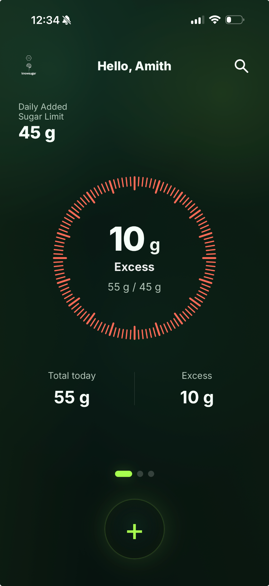

Today • Limit • Excess
The main ring puts your day into one simple view. Instantly see how much added sugar you have logged, your daily limit, and whether you have gone over.
knowsugar helps you track added sugar with one clear daily limit, a fast logging flow, a simple progress ring, and insights that show where your sugar is really coming from.

The app keeps things focused: one number, one ring, and a small set of helpful tools that make added sugar easier to understand every day.
The main ring puts your day into one simple view. Instantly see how much added sugar you have logged, your daily limit, and whether you have gone over.
knowsugar includes a growing added sugar search API built to expand over time and cover more of the foods, drinks, desserts, snacks, and sugary products people use every day.
View patterns over time, estimate how much activity would help burn off excess sugar, and export your data when you want a bigger picture.
This section mirrors the spirit of the in-app info area — giving users a clear explanation of why added sugar awareness matters, what counts as added sugar, and what each feature is designed to do.
Added sugar means sugar that is added during processing, preparation, or serving — not the natural sugar found inside whole fruit, plain milk, or other unsweetened whole foods.
Even when juice contains naturally derived sugar, it can behave more like a sugary product in real life because much of the fruit’s original fiber structure is removed and the sugar becomes easier to consume quickly.
Added sugar can build up quietly through drinks, snacks, desserts, sauces, and packaged foods. knowsugar helps make that invisible number visible, so users can build awareness and make better daily choices.
Log food items, see how the ring changes, and use the day’s numbers to stay aware of your intake. knowsugar is built to reduce complexity, not add more of it.
The app provides a personalized daily added sugar limit to give users a clear upper boundary. The goal is not perfection — it is awareness, consistency, and a practical way to make day-to-day decisions.
knowsugar includes a score-based and trend-based view of progress. This adds a light layer of motivation while helping users understand patterns over 7-day and 30-day periods.
The app includes a dedicated added sugar search API designed specifically around sugary foods and drinks. This helps keep search results more relevant to the app’s purpose and creates room for the database to grow over time.
knowsugar was built to stay simple enough for everyday use, while still giving users meaningful information about their added sugar patterns.
Answer a few basic questions so the app can estimate a personalized added sugar limit and tailor the experience to the user.
Use the added sugar search API or type your own item and amount. Each log updates the ring and daily totals immediately.
Check your score, habit trends, and reports to see where added sugar is coming from — and where small changes can make the biggest difference.
Most nutrition apps try to track everything. knowsugar focuses on one number that matters in a way users can understand quickly and act on consistently.
“The goal is not to create another overwhelming nutrition tracker. It is to help people become more aware of added sugar and make healthier decisions with less friction.”
knowsugar is built for everyday users, families, and anyone who wants a simpler way to build better food awareness. It is especially helpful for people who want practical prevention and habit insight rather than information overload.
See your daily limit, understand your patterns, and make added sugar easier to manage — one log at a time.